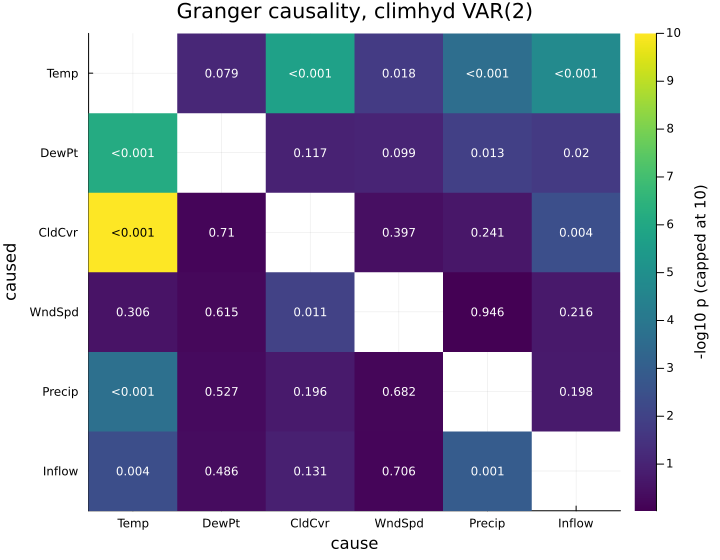
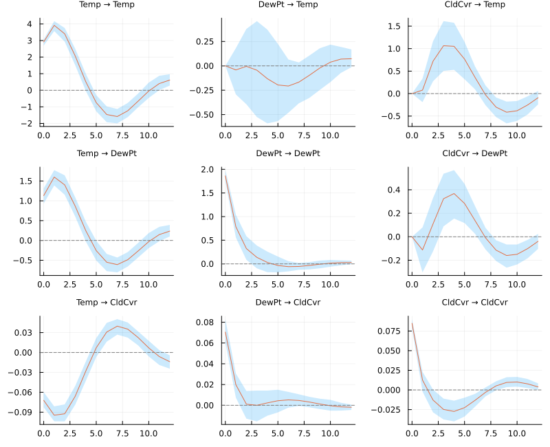
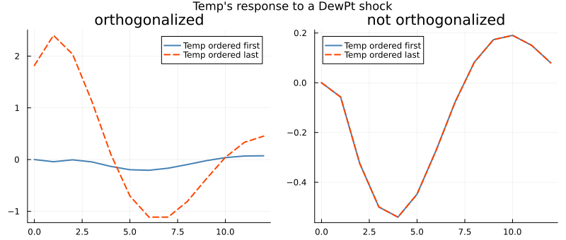
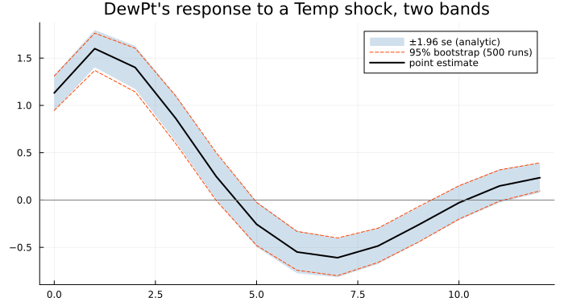
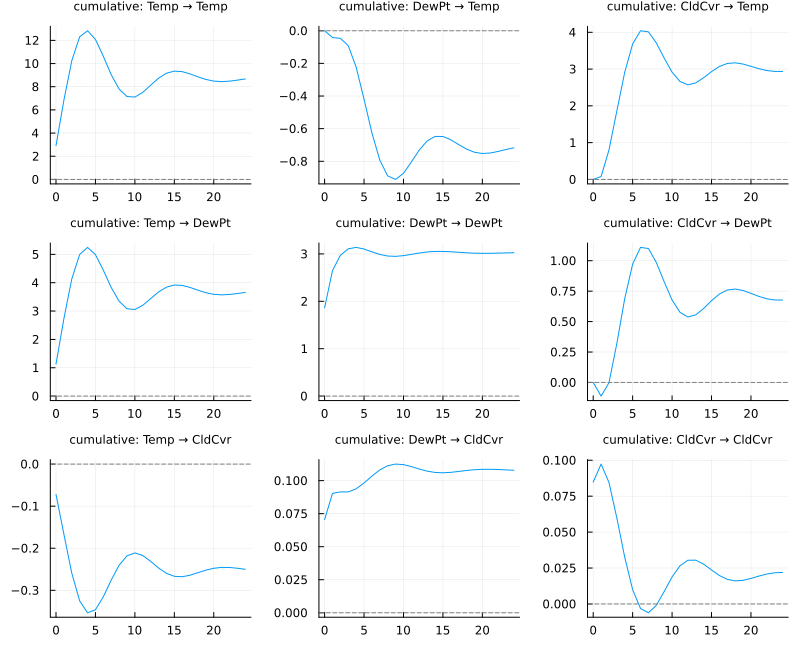
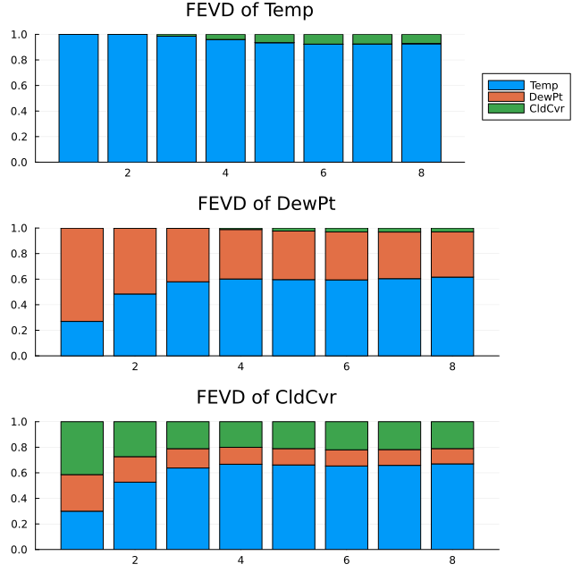
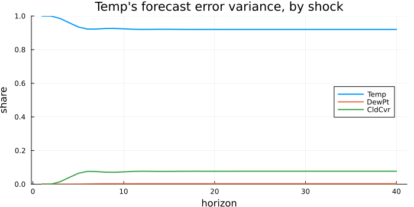

Causality and Impulse Responses
A fitted VAR is a large table of coefficients that nobody reads directly. This chapter is about the two ways of reading it that the model exists for: whether one variable helps predict another — Granger causality — and what happens to every variable when one of them is shocked — impulse responses and the variance decomposition built from them.
Both are computed from a VARModel; fitting one is Vector Autoregression.
using TSAnalytics, Plots
m2 = fit_var(dataset("econ5"), 2)
m = m2Granger causality
Does one variable help predict another, beyond what the other's own past already says? That is a question about predictive content, not about mechanism, and the name has misled people for fifty years.
t = granger_test(m2; cause = :gnp)Granger causality test -- system (VAR Wald/F)
H0: gnp do not Granger-cause unemp consum govinv prinv
F = 3.066974 df = (8, 740) p = 0.0020925493
chi2 = 24.53579 p = 0.0018624307 lags = 2 T = 159caused defaults to every variable not named in cause, and both can be blocks.
There are two different tests, and you should pick deliberately
Y = tsmatrix(dataset("econ5"))
sys = granger_test(fit_var(Y, 2); cause = 2) # the system test
pair = granger_test(Y[:, 1], Y[:, 2]; lags = 2) # the pairwise test
println("system F = ", round(statistic(sys), digits=6), " df2 = ", sys.df2)
println("pairwise F = ", round(statistic(pair), digits=6), " df2 = ", pair.df2)system F = 3.066974 df2 = 740
pairwise F = 11.140578 df2 = 154granger_test(m::VARModel; cause, caused)is the VAR-based Wald/F test —vars::causalityandstatsmodels'test_causality. Itsdf2is the system residual degrees of freedom,K·T − K·(Kp+ndet).granger_test(y, x; lags)is the single-equation F test —lmtest::grangertestandstatsmodels'grangercausalitytests. Itsdf2is one equation's,T − 2·lags − 1.
The F statistics coincide only when the caused set has one member, which for the default caused means K = 2. The p-values never coincide, because df2 differs by a factor of K. On the bivariate fixture at p = 2 the same F of 0.730864 gives 0.4821580341 from the system test and 0.4828206979 from the pairwise one.
Instantaneous causality
Granger causality is about the lags. Contemporaneous correlation in the residuals is a separate question:
instantaneous_causality(m2; cause = :gnp)Instantaneous causality test
H0: no instantaneous causality between gnp and unemp consum govinv prinv
chi2 = 70.438734 df = 4 p = 1.83385e-14 T = 159This is not a directional statement — contemporaneous correlation is symmetric, so swapping the two sets returns the identical statistic.
Every pair at once
With six variables there are thirty directed questions. climhyd — weather and inflow at Lake Shasta, Shumway and Stoffer's cross-correlation example — makes the point that the answers have a structure:
C = fit_var(dataset("climhyd"), 2)
cn = string.(C.names); K = length(cn)
P = fill(NaN, K, K)
for a in 1:K, b in 1:K
a == b || (P[b, a] = pvalue(granger_test(C; cause = C.names[a], caused = C.names[b])))
end
hm = heatmap(cn, cn, min.(-log10.(P), 10); c = :viridis, yflip = true,
colorbar_title = "-log10 p (capped at 10)", xlabel = "cause", ylabel = "caused",
title = "Granger causality, climhyd VAR(2)", size = (720, 560))
for a in 1:K, b in 1:K
a == b && continue
annotate!(hm, a - 0.5, b - 0.5,
text(P[b, a] < 0.001 ? "<0.001" : string(round(P[b, a]; digits = 3)), 8,
-log10(P[b, a]) > 7 ? :black : :white))
end
hm
Read it by column. Temperature helps predict four of the other five; dew point and wind speed help predict almost nothing; precipitation helps predict inflow, as it should for a reservoir. That is a plausible physical story, but the chart does not show it: it shows that temperature's past improves the forecasts of the others. With thirty tests at once, a few small p-values are expected by chance alone; treat a single 0.013 in this grid with corresponding caution.
Impulse responses
An impulse response answers the question a VAR exists for: if one variable is shocked today, what happens to every variable over the following periods. irf returns them at horizons 0 … h, every matrix laid out [response, impulse]:
D = dataset("climhyd")
W = (Temp = D.Temp, DewPt = D.DewPt, CldCvr = D.CldCvr)
mw = fit_var(W, 2)
r = irf(mw, 8)
round.(r.orth[2]; digits = 3) # one period after the shock3×3 Matrix{Float64}:
3.918 -0.042 0.078
1.6 0.785 -0.112
-0.095 0.02 0.013plot(r) draws the whole response × impulse grid:
plot(irf(mw, 12; boot = true, runs = 200); size = (800, 650))
The ordering is an assumption, not a formatting choice
The orthogonalized responses — the ones with a "one standard deviation shock" reading — come from the Cholesky factor of the residual covariance. That factor makes the first variable respond within the period only to its own shock, the second to the first two, and so on. Reorder the columns and every orthogonalized response changes:
rp = irf(fit_var((CldCvr = D.CldCvr, DewPt = D.DewPt, Temp = D.Temp), 2), 8)
println("Temp's impact response to its own shock, Temp first: ",
round(r.orth[1][1, 1]; digits = 4))
println("the same, with Temp last: ",
round(rp.orth[1][3, 3]; digits = 4))Temp's impact response to its own shock, Temp first: 2.9188
the same, with Temp last: 1.6294The non-orthogonalized responses (r.nonorth) are merely relabelled by a reordering. Both references leave the user to know this; the result here records the order it used in r.names and prints it.
The same response, traced both ways:
r12, rp12 = irf(mw, 12), irf(fit_var((CldCvr = D.CldCvr, DewPt = D.DewPt, Temp = D.Temp), 2), 12)
h = 0:12
pa = plot(h, [M[1, 2] for M in r12.orth]; label = "Temp ordered first", lw = 2,
title = "orthogonalized", color = :steelblue)
plot!(pa, h, [M[3, 2] for M in rp12.orth]; label = "Temp ordered last", lw = 2,
color = :orangered, linestyle = :dash)
pb = plot(h, [M[1, 2] for M in r12.nonorth]; label = "Temp ordered first", lw = 2,
title = "not orthogonalized", color = :steelblue)
plot!(pb, h, [M[3, 2] for M in rp12.nonorth]; label = "Temp ordered last", lw = 2,
color = :orangered, linestyle = :dash)
plot(pa, pb; layout = (1, 2), size = (800, 340),
plot_title = "Temp's response to a DewPt shock", plot_titlefontsize = 11)
On the right the two lines coincide exactly: a unit shock to the dew-point equation's error is the same thing whatever the order. On the left they are different stories. With temperature first, a dew-point shock is defined as the part of the dew-point surprise that temperature does not explain, and it barely moves temperature. With temperature last, the dew-point shock carries the common weather movement with it, and temperature swings by about two units. Neither is wrong. They answer different questions, and the ordering is the question you chose.
Uncertainty
irf(m, h; stderr = true) attaches analytic asymptotic standard errors (Lütkepohl 2005, §3.7). vars has none at all, so statsmodels was the only software reference; the formulas were also checked against a numerical Jacobian and against a parametric bootstrap of the sampling distribution, because the orthogonalized one is stated incorrectly in the textbook and statsmodels' own source says so.
irf(m, h; boot = true, runs = 1000, rng = …) attaches residual-bootstrap percentile bands — vars' scheme. One generator per replication makes a seeded run reproducible and the threaded result identical to the serial one. Expect the bands to be a little narrow in short samples: on a known bivariate VAR with n = 200 a nominal 95% band covered the truth about 92–93% of the time, the small-sample bias Kilian (1998) documented for this interval. vars makes no correction either.
The two bands, on one response:
using Random
ra = irf(mw, 12; stderr = true)
rb = irf(mw, 12; boot = true, runs = 500, rng = MersenneTwister(1))
pt = [M[2, 1] for M in ra.orth]
se = [S[2, 1] for S in ra.stderr_orth]
plot(h, pt .+ 1.96 .* se; fillrange = pt .- 1.96 .* se, fillalpha = 0.25, linealpha = 0,
color = :steelblue, label = "±1.96 se (analytic)")
plot!(h, [M[2, 1] for M in rb.upper]; color = :orangered, linestyle = :dash,
label = "95% bootstrap (500 runs)")
plot!(h, [M[2, 1] for M in rb.lower]; color = :orangered, linestyle = :dash, label = "")
plot!(h, pt; color = :black, lw = 2, label = "point estimate")
hline!([0.0]; color = :gray, label = "",
title = "DewPt's response to a Temp shock, two bands", size = (700, 380))
On 454 observations they nearly coincide — the asymptotics have had room to work. The bootstrap band is free to be asymmetric about the point estimate, which the analytic band cannot be; in a short sample that freedom is the main reason to pay for the bootstrap.
cumulative = true gives running sums — the response of the level of a variable that entered the VAR in differences:
plot(irf(mw, 24; cumulative = true); size = (800, 650))
For a stable VAR every cumulative response settles, at the value lr_effects returns directly — and that refuses an unstable VAR, because the sum does not converge. Both references invert I - Σ A_j regardless. econ5's VAR(2), with its largest root just above 1, is a real example:
try
lr_effects(m)
catch err
println(sprint(showerror, err)[1:120], " …")
endArgumentError: lr_effects: the VAR is not stable (largest companion root 1.006183 >= 1), so the cumulative response does …Forecast error variance decomposition
fevd splits each variable's h-step forecast error variance by orthogonalized shock. It inherits the ordering dependence, and its horizons start at 1 where the impulse response's start at 0 — a one-step forecast already has error. The two objects do not share an axis, and nothing aligns them silently.
f = fevd(mw, 8)
round.(f.decomp[:, 8, :]; digits = 3) # [variable, shock] at the 8-step horizon3×3 Matrix{Float64}:
0.926 0.003 0.071
0.616 0.353 0.03
0.67 0.12 0.21plot(f; size = (650, 650))
Both IRFResult and FEVDResult have plot recipes: plot(r) draws the response × impulse grid with any bootstrap band shaded, plot(f) the stacked shares.
Over a long horizon the shares settle, because for a stable VAR the forecast error variance converges to the unconditional variance:
f40 = fevd(mw, 40)
p = plot(; title = "Temp's forecast error variance, by shock", xlabel = "horizon",
ylabel = "share", legend = :right, ylims = (0, 1), size = (700, 350))
for k in 1:3
plot!(p, f40.horizons, f40.decomp[1, :, k]; lw = 2, label = string(f40.names[k]))
end
p
At one step temperature's own shock accounts for all of its forecast error — it is ordered first, so by construction nothing else moves it within the period. Within about six months the shares have stopped changing: roughly 92% its own shock, 8% cloud cover, dew point next to nothing. Those limiting shares are the decomposition's real answer.
Two places where the references are wrong
Both are worth knowing because a test written against the reference would fail where this package is right.
vars reports p = 0 for any moderately strong rejection
vars::causality computes its p-values as 1 - pf(...) and 1 - pchisq(...) rather than taking the upper tail, so they underflow to exactly zero in ordinary use. On climhyd an F of 13.36 on (10, 2634) degrees of freedom:
C = fit_var(dataset("climhyd"), 2)
g = granger_test(C; cause = :Temp)
println("F = ", round(statistic(g), digits=6), " df = (", g.df1, ", ", g.df2, ")")
println("this package : p = ", round(pvalue(g), sigdigits=6))
println("1 - CDF form : p = ", 1 - TSAnalytics._f_cdf(statistic(g), g.df1, g.df2))F = 13.359738 df = (10, 2634)
this package : p = 3.66448e-23
1 - CDF form : p = 0.0The second line is what vars prints. statsmodels calls a survival function and gets it right, so this is a defect rather than a convention — and it is why this package's p-values are not comparable with vars in the tail.
statsmodels cannot test instantaneous causality between two blocks
Its test_inst_causality raises IndexError whenever both the causing and the caused set have more than one member, because it indexes a mask with two fancy index arrays that only broadcast when one has length 1. Verified failing at (2,4), (3,3) and (4,2) on K = 6, and working at (1, K−1) and (K−1, 1). It always errors rather than returning a wrong answer.
So for a general block vars is the only reference, and this package agrees with it there:
instantaneous_causality(C; cause = [:Temp, :DewPt, :CldCvr])Instantaneous causality test
H0: no instantaneous causality between Temp DewPt CldCvr and WndSpd Precip Inflow
chi2 = 173.881015 df = 9 p = 9.582590000000001e-33 T = 452What is not here yet
- Sims-Zha error bands, generalised (Pesaran-Shin) impulse responses and bias-corrected bootstrap bands.
statsmodelshas the first and neither reference the other two; each is a separate piece of work. - Bands for structural impulse responses — see Structural VAR.
See also
- Vector Autoregression — fitting the model these are computed from
- Structural VAR — identifying shocks by economics rather than by ordering
- Coming from R or Python — every documented divergence in one place
- API: Vector Autoregression